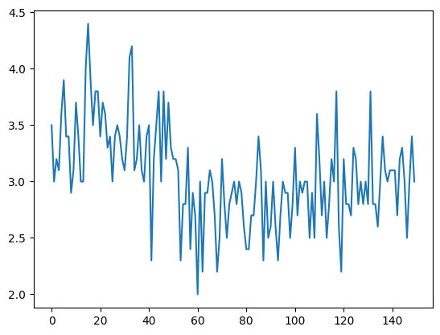
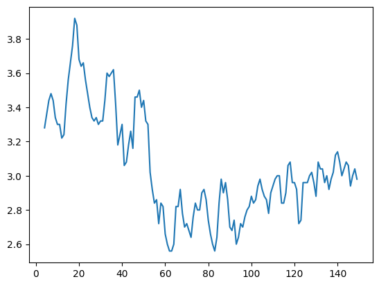

import pandas as pd
import numpy as np
import matplotlib.pyplot as plt
from datetime import datetimeTime Series
Date and Time Data types and tools
- Converting between Sting and Datetime
Time series basics
- Indexing, selection, subsetting
- Time series with duplicate indices
Data Ranges, Frequencies, and Shifting
- Generating Date Ranges
- Frequencies and Date offsets
- Shifting (Leading and Lagging) Data
- Shifting dates with offsets
Time Zone Handling
- Time zone Loacalization and Conversion
- Operations with Time Zone-Aware Timestamp Objects
- Operations between different time zones
Periods and Period Arithmetic
- period frequency conversion
- Quaterly period frequencies
- Converting timestamps to periods (and back)
- Creating a PeriodIndex from Arrays
Resampling and Frequency Conversion
- Donwsampling
- Open-high-low-close(OHLC) resampling
- Unsampling and Interpolation
- Resampling with periods
- Grouped time resampling
Moving window functions
- Exponentially weighted functions
- Binary moving window functions
- User-defined window functions
## Data and Time Data Types and Tools
now = datetime.now()
nownow.year, now.month, now.daydelta = datetime(2011, 1, 7) - datetime(2008, 6, 3, 4, 1, 4)
deltadelta.daysdelta.seconds# add or subtract a timedelta to yield a new shifted object
from datetime import timedelta
start = datetime(2024, 2, 28)
start + timedelta(12)start - 2 * timedelta(12)help(datetime)### Converting between String and DateFrame
stamp = datetime(2024, 1, 30)
str(stamp)stamp.strftime("%Y-%m-%d")value = '2024-2-28'
datetime.strptime(value, '%Y-%m-%d')datestrs = ["2/23/2024", "2/28/2024"]
[datetime.strptime(x, "%m/%d/%Y") for x in datestrs]# using pandas
datestrs = ["2024-2-23 12:00:00", "2024-2-28 00:00:00"]pd.to_datetime(datestrs)idx = pd.to_datetime(datestrs+ [None])idxidx[2]pd.isna(idx)Time series basics
dates = [datetime(2024,2,23), datetime(2024,2,24),
datetime(2024,2,25), datetime(2024,2,26),
datetime(2024,2,27), datetime(2024,2,28)]ts = pd.Series(np.random.standard_normal(6),
index = dates)tsts.indexts + ts[::2]ts.index.dtypestamp = ts.index[0]stampIndexing, Selection, Subsetting
stamp = ts.index[2]ts[stamp]stampts["2024-02-25"]longer_ts = pd.Series(np.random.standard_normal(1000),
index = pd.date_range("2000-01-01",
periods=1000))longer_tslonger_ts["2001"]longer_ts["2001-05"]# slicing with datatime objects works aswell
ts[datetime(2011,1,7):]ts.truncate(after="2001-01-09")# for DataFrame
dates_df = pd.date_range("2024-01-01",
periods=100,
freq= "W-WED")long_df = pd.DataFrame(np.random.standard_normal((6, 4)),
index = dates,
columns = ['Colorado', 'Texas',
'New York', "Ohio"])
long_df.loc["2011-05-01"]Time series with duplicate indices
dates = pd.DatetimeIndex(["2017-12-03", "2018-11-06", "2019-11-06",
"2021-01-28", "2022-09-06"])
dup_ts = pd.Series(np.arange(5), index=dates)dup_ts# checking if the index is unique
dup_ts.index.is_unique# unique indexes can be grouped
grouped = dup_ts.groupby(level=0)grouped.mean()grouped.count()Data Ranges, Frequencies, and Shifting
tsresampler = ts.resample("D")resamplerGenerating date ranges
index = pd.date_range("2012-04-01", "2012-06-01")
indexpd.date_range(start="2024-04-01", periods=20)pd.date_range(end="2024-03-24", periods=20)pd.date_range("2000-01-01", '2000-12-01', freq="BM")Frequencies and date offsets
from pandas.tseries.offsets import Hour, Minutehour = Hour()hourfour_hours = Hour(4)four_hours# combined addition
Hour(2) + Minute(30)pd.date_range("2023-05-01", periods = 10, freq='1h30min')# week of month dates
monthly_dates = pd.date_range("2012-01-01", "2012-09-01",
freq="WOM-3FRI")
list(monthly_dates)Shifting (Leading and Lagging Data)
- moving backward and forward through time
ts = pd.Series(np.random.standard_normal(4),
index=pd.date_range("2022-01-01", periods=4,
freq="M"))
tsts.shift(2)ts.shift(-2)ts/ts.shift(1)-1ts.shift(2, freq="M")# groupby
ts = pd.Series(np.random.standard_normal(20),
index=pd.date_range("2024-10-02",
periods=20, freq="4D"))tsts.groupby(MonthEnd().rollfoward).mean()ts.resample("M").mean()2024-10-31 0.076767
2024-11-30 -0.177065
2024-12-31 0.635081
Freq: M, dtype: float64Time Zone handling
import pytz
pytz.common_timezones[-5:]['US/Eastern', 'US/Hawaii', 'US/Mountain', 'US/Pacific', 'UTC']# to get timezones, use pytz.timezone
tz = pytz.timezone("America/New_York")
tz<DstTzInfo 'America/New_York' LMT-1 day, 19:04:00 STD>### Time zone localization and conversion
dates = pd.date_range("2021-11-17 09:30", periods=6)ts = pd.Series(np.random.standard_normal(len(dates)),
index = dates)ts2021-11-17 09:30:00 0.808643
2021-11-18 09:30:00 1.435830
2021-11-19 09:30:00 0.764818
2021-11-20 09:30:00 0.345263
2021-11-21 09:30:00 -0.671032
2021-11-22 09:30:00 0.694027
Freq: D, dtype: float64print(ts.index.tz)None# Dates from timezone set
pd.date_range("2023-3-01", periods=10, tz="UTC")DatetimeIndex(['2023-03-01 00:00:00+00:00', '2023-03-02 00:00:00+00:00',
'2023-03-03 00:00:00+00:00', '2023-03-04 00:00:00+00:00',
'2023-03-05 00:00:00+00:00', '2023-03-06 00:00:00+00:00',
'2023-03-07 00:00:00+00:00', '2023-03-08 00:00:00+00:00',
'2023-03-09 00:00:00+00:00', '2023-03-10 00:00:00+00:00'],
dtype='datetime64[ns, UTC]', freq='D')Periods and Period Arithmetic
pd.Series(np.random.standard_normal(6),
)0 0.434382
1 1.383303
2 0.975721
3 -1.377090
4 0.659404
5 1.098894
dtype: float64values= ["2001Q3", "20022Q2", '20033Q1']periods = pd.period_range("2000-01-01", "2000-06-30",
freq="M")index = pd.PeriodIndex(values, freq="Q-Dec")p = pd.Period("2011", freq= "A-Jun")pPeriod('2011', 'A-JUN')p.asfreq("M", how='start')Period('2010-07', 'M')p.asfreq("M", how="end")Period('2011-06', 'M')# period index
periods = pd.period_range("2006", "2009",
freq="A-Dec")ts= pd.Series(np.random.standard_normal
(len(periods)), index= periods)ts2006 1.079865
2007 -1.891582
2008 -0.634198
2009 0.155782
Freq: A-DEC, dtype: float64ts.asfreq("M", how='start')2006-01 1.079865
2007-01 -1.891582
2008-01 -0.634198
2009-01 0.155782
Freq: M, dtype: float64Converting timestamps to periods (and back)
dates = pd.date_range("2000-01-01",
periods=3, freq="M")ts= pd.Series(np.random.standard_normal(3),
index=dates)ts2000-01-31 -1.472182
2000-02-29 0.042816
2000-03-31 1.232869
Freq: M, dtype: float64pts = ts.to_period()pts2000-01 -1.472182
2000-02 0.042816
2000-03 1.232869
Freq: M, dtype: float64dates = pd.date_range("2022-01-29", periods=6)ts2 = pd.Series(np.random.standard_normal(6),
index= dates)ts22022-01-29 -0.865524
2022-01-30 1.518387
2022-01-31 0.327414
2022-02-01 0.380410
2022-02-02 -0.984295
2022-02-03 -2.798704
Freq: D, dtype: float64ts2.to_period<bound method Series.to_period of 2022-01-29 -0.865524
2022-01-30 1.518387
2022-01-31 0.327414
2022-02-01 0.380410
2022-02-02 -0.984295
2022-02-03 -2.798704
Freq: D, dtype: float64>pts = ts2.to_period()pts2022-01-29 -0.865524
2022-01-30 1.518387
2022-01-31 0.327414
2022-02-01 0.380410
2022-02-02 -0.984295
2022-02-03 -2.798704
Freq: D, dtype: float64pts.to_timestamp(how='end')2022-01-29 23:59:59.999999999 -0.865524
2022-01-30 23:59:59.999999999 1.518387
2022-01-31 23:59:59.999999999 0.327414
2022-02-01 23:59:59.999999999 0.380410
2022-02-02 23:59:59.999999999 -0.984295
2022-02-03 23:59:59.999999999 -2.798704
Freq: D, dtype: float64Reshaping and sample frequency conversion
dates = pd.date_range("2022-12-10", periods=100)ts= pd.Series(np.random.standard_normal(len(dates)),
index=dates)ts2022-12-10 0.655061
2022-12-11 -2.144779
2022-12-12 0.489381
2022-12-13 -0.117629
2022-12-14 0.782097
...
2023-03-15 -1.263925
2023-03-16 -0.317576
2023-03-17 0.398997
2023-03-18 -0.237727
2023-03-19 -1.407480
Freq: D, Length: 100, dtype: float64ts.resample("M").mean()2022-12-31 -0.177024
2023-01-31 0.218224
2023-02-28 -0.040488
2023-03-31 -0.288735
Freq: M, dtype: float64ts.resample("M", kind="period").mean()2022-12 -0.177024
2023-01 0.218224
2023-02 -0.040488
2023-03 -0.288735
Freq: M, dtype: float64downsampling
dates = pd.date_range("2022-01-01",
periods=12, freq="T")ts = pd.Series(np.arange(len(dates)), index=dates)ts2022-01-01 00:00:00 0
2022-01-01 00:01:00 1
2022-01-01 00:02:00 2
2022-01-01 00:03:00 3
2022-01-01 00:04:00 4
2022-01-01 00:05:00 5
2022-01-01 00:06:00 6
2022-01-01 00:07:00 7
2022-01-01 00:08:00 8
2022-01-01 00:09:00 9
2022-01-01 00:10:00 10
2022-01-01 00:11:00 11
Freq: T, dtype: int32ts.resample("5min").sum()2022-01-01 00:00:00 10
2022-01-01 00:05:00 35
2022-01-01 00:10:00 21
Freq: 5T, dtype: int32ts.resample("5min", closed="right",
label="right").sum()2022-01-01 00:00:00 0
2022-01-01 00:05:00 15
2022-01-01 00:10:00 40
2022-01-01 00:15:00 11
Freq: 5T, dtype: int32open-high-low-close(OHLC) resampling
ts = pd.Series(np.random.permutation
(np.arange(len(dates))), index=dates)ts.resample("5min").ohlc()| open | high | low | close | |
|---|---|---|---|---|
| 2022-01-01 00:00:00 | 1 | 11 | 1 | 5 |
| 2022-01-01 00:05:00 | 3 | 7 | 0 | 0 |
| 2022-01-01 00:10:00 | 8 | 10 | 8 | 10 |
upsampling and interpolation
frame = pd.DataFrame(np.random.standard_normal((2,5)),
index=pd.date_range("2022-01-01",
periods=2, freq="W-WED"),
columns = ["fdk", 'sadik', 'golewala','pipli','mudki'])frame| fdk | sadik | golewala | pipli | mudki | |
|---|---|---|---|---|---|
| 2022-01-05 | -0.500335 | -0.286433 | 0.805294 | 0.557015 | -1.293101 |
| 2022-01-12 | 0.470091 | -0.574010 | -0.817633 | 0.197509 | 0.189306 |
for n in range(10):
print(n)#list comprehension
[n**2 + 2 for n in range(5)][2, 3, 6, 11, 18]# for loop
for n in [n**2 + 2 for n in range(5)]:
print(n)2
3
6
11
18df_daily = frame.resample('D').asfreq()df_daily| fdk | sadik | golewala | pipli | mudki | |
|---|---|---|---|---|---|
| 2022-01-05 | -0.500335 | -0.286433 | 0.805294 | 0.557015 | -1.293101 |
| 2022-01-06 | NaN | NaN | NaN | NaN | NaN |
| 2022-01-07 | NaN | NaN | NaN | NaN | NaN |
| 2022-01-08 | NaN | NaN | NaN | NaN | NaN |
| 2022-01-09 | NaN | NaN | NaN | NaN | NaN |
| 2022-01-10 | NaN | NaN | NaN | NaN | NaN |
| 2022-01-11 | NaN | NaN | NaN | NaN | NaN |
| 2022-01-12 | 0.470091 | -0.574010 | -0.817633 | 0.197509 | 0.189306 |
# filling certain number of periods
frame.resample("D").ffill(limit=2)| fdk | sadik | golewala | pipli | mudki | |
|---|---|---|---|---|---|
| 2022-01-05 | -0.500335 | -0.286433 | 0.805294 | 0.557015 | -1.293101 |
| 2022-01-06 | -0.500335 | -0.286433 | 0.805294 | 0.557015 | -1.293101 |
| 2022-01-07 | -0.500335 | -0.286433 | 0.805294 | 0.557015 | -1.293101 |
| 2022-01-08 | NaN | NaN | NaN | NaN | NaN |
| 2022-01-09 | NaN | NaN | NaN | NaN | NaN |
| 2022-01-10 | NaN | NaN | NaN | NaN | NaN |
| 2022-01-11 | NaN | NaN | NaN | NaN | NaN |
| 2022-01-12 | 0.470091 | -0.574010 | -0.817633 | 0.197509 | 0.189306 |
frame.resample("W-THU").ffill()| fdk | sadik | golewala | pipli | mudki | |
|---|---|---|---|---|---|
| 2022-01-06 | -0.500335 | -0.286433 | 0.805294 | 0.557015 | -1.293101 |
| 2022-01-13 | 0.470091 | -0.574010 | -0.817633 | 0.197509 | 0.189306 |
Resampling with periods
frame2 = pd.DataFrame(np.random.standard_normal((24,4)),
index = pd.period_range("1-2000","12-2001",
freq="M"),
columns=['fzp', 'fdk', 'btd', 'mudki'])frame2.head()| fzp | fdk | btd | mudki | |
|---|---|---|---|---|
| 2000-01 | -0.438864 | 0.122812 | -1.157890 | 0.403075 |
| 2000-02 | -0.688525 | -0.721772 | 0.011549 | -0.979600 |
| 2000-03 | 0.607322 | -1.119676 | 0.089442 | 0.060338 |
| 2000-04 | 0.690526 | -0.095600 | 0.212831 | 0.410823 |
| 2000-05 | -1.016129 | -0.430221 | -1.235741 | 0.250289 |
annual_frame = frame2.resample("A-DEC").mean()annual_frame| fzp | fdk | btd | mudki | |
|---|---|---|---|---|
| 2000 | -0.094852 | -0.436623 | -0.600286 | -0.715234 |
| 2001 | 0.025365 | -0.347140 | 0.035530 | -0.521633 |
# Q-DEC:Quarterly, year ending in Dec
annual_frame.resample("Q-DEC").ffill()| fzp | fdk | btd | mudki | |
|---|---|---|---|---|
| 2000Q1 | -0.094852 | -0.436623 | -0.600286 | -0.715234 |
| 2000Q2 | -0.094852 | -0.436623 | -0.600286 | -0.715234 |
| 2000Q3 | -0.094852 | -0.436623 | -0.600286 | -0.715234 |
| 2000Q4 | -0.094852 | -0.436623 | -0.600286 | -0.715234 |
| 2001Q1 | 0.025365 | -0.347140 | 0.035530 | -0.521633 |
| 2001Q2 | 0.025365 | -0.347140 | 0.035530 | -0.521633 |
| 2001Q3 | 0.025365 | -0.347140 | 0.035530 | -0.521633 |
| 2001Q4 | 0.025365 | -0.347140 | 0.035530 | -0.521633 |
annual_frame.resample("Q-Dec", convention="end").asfreq()| fzp | fdk | btd | mudki | |
|---|---|---|---|---|
| 2000Q4 | -0.094852 | -0.436623 | -0.600286 | -0.715234 |
| 2001Q1 | NaN | NaN | NaN | NaN |
| 2001Q2 | NaN | NaN | NaN | NaN |
| 2001Q3 | NaN | NaN | NaN | NaN |
| 2001Q4 | 0.025365 | -0.347140 | 0.035530 | -0.521633 |
annual_frame.resample("Q-MAR").ffill()| fzp | fdk | btd | mudki | |
|---|---|---|---|---|
| 2000Q4 | -0.094852 | -0.436623 | -0.600286 | -0.715234 |
| 2001Q1 | -0.094852 | -0.436623 | -0.600286 | -0.715234 |
| 2001Q2 | -0.094852 | -0.436623 | -0.600286 | -0.715234 |
| 2001Q3 | -0.094852 | -0.436623 | -0.600286 | -0.715234 |
| 2001Q4 | 0.025365 | -0.347140 | 0.035530 | -0.521633 |
| 2002Q1 | 0.025365 | -0.347140 | 0.035530 | -0.521633 |
| 2002Q2 | 0.025365 | -0.347140 | 0.035530 | -0.521633 |
| 2002Q3 | 0.025365 | -0.347140 | 0.035530 | -0.521633 |
Grouped time sampling
N = 15
times = pd.date_range("2024-02-29 00:00", freq="1min",
periods=N)
df = pd.DataFrame({'time':times,
"value":np.arange(N)})df| time | value | |
|---|---|---|
| 0 | 2024-02-29 00:00:00 | 0 |
| 1 | 2024-02-29 00:01:00 | 1 |
| 2 | 2024-02-29 00:02:00 | 2 |
| 3 | 2024-02-29 00:03:00 | 3 |
| 4 | 2024-02-29 00:04:00 | 4 |
| 5 | 2024-02-29 00:05:00 | 5 |
| 6 | 2024-02-29 00:06:00 | 6 |
| 7 | 2024-02-29 00:07:00 | 7 |
| 8 | 2024-02-29 00:08:00 | 8 |
| 9 | 2024-02-29 00:09:00 | 9 |
| 10 | 2024-02-29 00:10:00 | 10 |
| 11 | 2024-02-29 00:11:00 | 11 |
| 12 | 2024-02-29 00:12:00 | 12 |
| 13 | 2024-02-29 00:13:00 | 13 |
| 14 | 2024-02-29 00:14:00 | 14 |
# resmpling for 5 min count
times2 = pd.date_range("2024-02-29 00:00", freq="5min",
periods=N)
df2 = pd.DataFrame({'time':times2,
"value":np.arange(N)})
df2| time | value | |
|---|---|---|
| 0 | 2024-02-29 00:00:00 | 0 |
| 1 | 2024-02-29 00:05:00 | 1 |
| 2 | 2024-02-29 00:10:00 | 2 |
| 3 | 2024-02-29 00:15:00 | 3 |
| 4 | 2024-02-29 00:20:00 | 4 |
| 5 | 2024-02-29 00:25:00 | 5 |
| 6 | 2024-02-29 00:30:00 | 6 |
| 7 | 2024-02-29 00:35:00 | 7 |
| 8 | 2024-02-29 00:40:00 | 8 |
| 9 | 2024-02-29 00:45:00 | 9 |
| 10 | 2024-02-29 00:50:00 | 10 |
| 11 | 2024-02-29 00:55:00 | 11 |
| 12 | 2024-02-29 01:00:00 | 12 |
| 13 | 2024-02-29 01:05:00 | 13 |
| 14 | 2024-02-29 01:10:00 | 14 |
# simply resampling
df.set_index('time').resample("5min").count()| value | |
|---|---|
| time | |
| 2024-02-29 00:00:00 | 5 |
| 2024-02-29 00:05:00 | 5 |
| 2024-02-29 00:10:00 | 5 |
# DataFrame with multiple time series,
df3 = pd.DataFrame({"time":times.repeat(3),
"key":np.tile(["a","b","c"],N),
'value':np.arange(N*3.)})
df3.head()| time | key | value | |
|---|---|---|---|
| 0 | 2024-02-29 00:00:00 | a | 0.0 |
| 1 | 2024-02-29 00:00:00 | b | 1.0 |
| 2 | 2024-02-29 00:00:00 | c | 2.0 |
| 3 | 2024-02-29 00:01:00 | a | 3.0 |
| 4 | 2024-02-29 00:01:00 | b | 4.0 |
# pandas grouper object
time_key = pd.Grouper(freq="5min")resampled = (df3.set_index("time")
.groupby(["key", time_key])
.sum())resampled| value | ||
|---|---|---|
| key | time | |
| a | 2024-02-29 00:00:00 | 30.0 |
| 2024-02-29 00:05:00 | 105.0 | |
| 2024-02-29 00:10:00 | 180.0 | |
| b | 2024-02-29 00:00:00 | 35.0 |
| 2024-02-29 00:05:00 | 110.0 | |
| 2024-02-29 00:10:00 | 185.0 | |
| c | 2024-02-29 00:00:00 | 40.0 |
| 2024-02-29 00:05:00 | 115.0 | |
| 2024-02-29 00:10:00 | 190.0 |
resampled.reset_index()| key | time | value | |
|---|---|---|---|
| 0 | a | 2024-02-29 00:00:00 | 30.0 |
| 1 | a | 2024-02-29 00:05:00 | 105.0 |
| 2 | a | 2024-02-29 00:10:00 | 180.0 |
| 3 | b | 2024-02-29 00:00:00 | 35.0 |
| 4 | b | 2024-02-29 00:05:00 | 110.0 |
| 5 | b | 2024-02-29 00:10:00 | 185.0 |
| 6 | c | 2024-02-29 00:00:00 | 40.0 |
| 7 | c | 2024-02-29 00:05:00 | 115.0 |
| 8 | c | 2024-02-29 00:10:00 | 190.0 |
Moving window functions
- used for noisy or gappy data
- exclude automatically missing data
data = pd.read_csv("E:\pythonfordatanalysis\semainedu26fevrier\iris.csv")data.columnsIndex(['Id', 'Sepal Length (cm)', 'Sepal Width (cm)', 'Petal Length (cm)',
'Petal Width (cm)', 'Species'],
dtype='object')data['Sepal Width (cm)'].plot()<Axes: >
data["Sepal Width (cm)"].rolling(5).mean().plot()<Axes: >